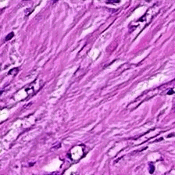
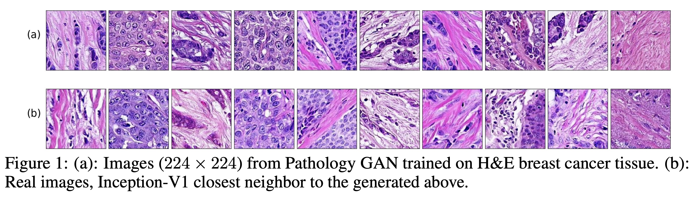
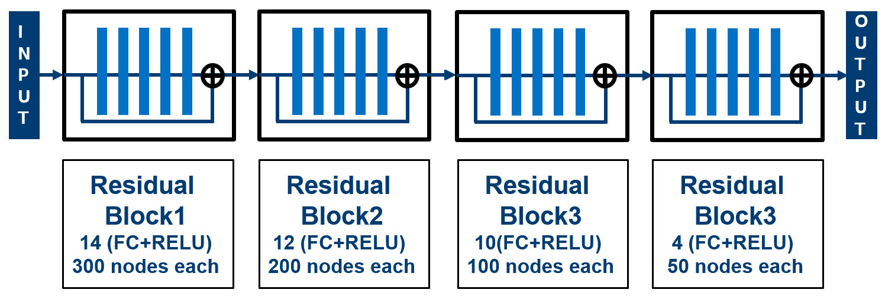
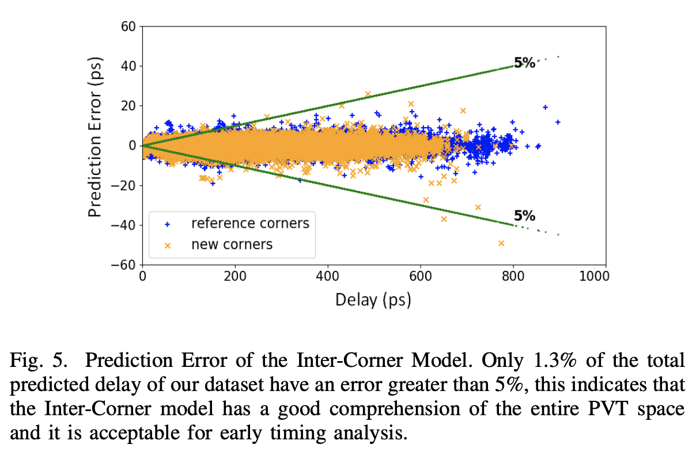

About Me
I’m a second year PhD student advised by Ke Yuan and Roderick Murray-Smith at the Univeristy of Glasgow, Computing Science department.
I’m interested in generative models, Bayesian nonparametrics, representation learning and interpretability of latent variable models. Additionally, my current research focuses on applying generative models to histopathology and how these can help to better understand cancer tissue.
Before starting the PhD, I worked in the semiconductor industry as a SoC Design engineer in the FPGA field at Altera Coporation and Intel Corporation in San Jose, CA. I received a MSc in Electrical Engineering at the IIT in Chicago, and MSc and BSc in Telecommunications Engineering at ETSIT-UPM in Madrid.
Research Experience
Preprints
'Pathology GAN: Learning deep representations of cancer tissue' Adalberto Claudio Quiros, Roderick Murray-Smith, Ke Yuan. 2019.
https://arxiv.org/abs/1907.02644 We apply Generative Adversarial Networks (GANs) to the domain of digital pathology. Current machine learning research for digital pathology focuses on diagnosis, but we suggest a different approach and advocate that generative models could help to understand and find fundamental morphological characteristics of cancer tissue. In this paper, we develop a framework which allows GANs to capture key tissue features, and present a vision of how these could link cancer tissue and DNA in the future. To this end, we trained our model on breast cancer tissue from a medium size cohort of 526 patients, producing high fidelity images. We further study how a range of relevant GAN evaluation metrics perform on this task, and propose to evaluate synthetic images with clinically/pathologically meaningful features. Our results show that these models are able to capture key morphological characteristics that link with phenotype, such as survival time and Estrogen-receptor (ER) status. Using an Inception-V1 network as feature extraction, our models achieve a Frechet Inception Distance (FID) of 18.4. We find that using pathology meaningful features on these metrics show consistent performance, with a FID of 8.21. Furthermore, we asked two expert50athologists to distinguish our generated images from real ones, finding no significant difference between them.

Publications
'DNNLibGen : Deep Neural Network Based Fast Library Generator' Eunice Naswali, Adalberto Claudio Quiros, Pravin Chandran. 2019.
26th IEEE International Conference on Electronics Circuits and Systems
 We propose a new modeling methodology using deep learning techniques for generating timing models for Static Timing Analysis (STA). Current device behavior is non-linear, non-monotonic and exhibits high sensitivity to (Process Voltage Temperature) PVT variation which imposes a myriad of design challenges including the need for analysis at several PVT corners. While complete PVT coverage is crucial for detecting design issues early and achieving time-to-market goals with improved predictability, the number of PVT corners are growing exponentially and library generation has also become a significant bottleneck in current design cycles. To this end, we have developed a novel methodology for timing library generation that uses data from sparse characterization in PVT space and generates delay models at required sign-off corners. We have employed deep neural nets with residual connections for delay modeling and our methodology enables a ‘single model’ to fully comprehend multiple cell types, PVT corners and generate required PVT timing libraries. The proposed library-generator uses a novel inter-corner model to generate delay tables at 17 test corners using 7 corners as reference. In addition, we have developed an intra-corner model, to generate dense 8x8 delay tables using delays from 10 slew/load points as reference. The results show that, using these models, we are able to achieve key improvements with over 98.7% of calculated delays within acceptable tolerance while reducing characterization run-time for early milestones by up to 60%.

Miscellaneous
- Januray, 2020: Wrote a tutorial document (Draft) and code implementations of related concepts to Dirichlet Processes: GEM distribution, Polya Urn, Chinese restaurant process, Stick-Breaking construction, DP Posterior, and DP Mixture Models.
- October - December, 2020: Worked as a teaching assistant and gave two classes at the ‘Machine Learning for Data Scientists’ course of MSc in Data Science, briefly introducing Sampling methods and Variational Inference: Sampling slides, MCMC Bayesian Linear regression example, Variational Inference slides, and VI Bayesian Linear regression example
- March, 2019: Wrote a brief survey on GANs: slides and code for relevant models.
Professional Experience
Intel Corporation
San Jose, CA, USASenior SoC Design Engineer - Fabric Performance Leadership Team
April 2017 – September 2018
I worked in the Fabric Performance Leadership team, our goal was to analyze the Stratix 10 FPGA design from the hardware and software perspective to find flaws and push the FPGA frequency performance forward.
During this period, a few of the most important achievements were:
- A Python graph builder tool that generates a graph of the FPGA’s routing structure, prunes it and creates a visualization from an register-transfer level netlist design.
- Implementated a device End-of-Life (EOL) methodology tool that obtained the aging degradation delay on FPGA’s transistors.
- Analyzed logical and physical implementation of Adders: From the FPGA software, integrated circuit design and architecture perspective. The result of this study was a redesign of the adder’s implementation leading to a 70% improvement on frequency performance for adders.
Altera Coporation/Intel Corporation
San Jose, CA, USASenior SoC Design Engineer - Full Chip Timing Team
June 2014 – April 2017
Worked in the Full Chip Timing team on Static Timing Analysis, first to verify the hardware FPGA designs running at the frequency specifications, and secondly to correlate the FPGA software models with the hardware designs and silicon devices.
- Developed a Stratix 10 full chip timing violation tool: This tool gathers all full chip timing violations due to maximum transition (~100K instances), cross reference each violation to a lower system blocks, and compiles them for each block designer.
- Arria 10 Frequency binning and register to register timing correlation lead: Silicon/Quartus-FPGA-SW/HSPICE model frequency correlation, given an internal Altera Quality Award in 2015 Q2.
- Developed a timing tool in Python, HSPICE, and Quartus FPGA Software significantly impacting the process: Increasing the number of data points from 10 to 7K, with different features including Power-Voltage-Temperature (PVT), voltage threshold and sheet resistance sweeping options.
Worked developing bots for web data scraping, additionally I help in maintaining and developing improvements on middle tier code and servers, which controled the bots and jobs executions. Most of this work was done in SQL, C#, Python, C++.
Education
Illinois Institute of Technology
Master of Science in Electrical Engineering - 3.53/4
Chicago, IL, USA
Polytechnic University of Madrid, ESTIT-UPM
Master & Bachelor of Science in Telecommunications Engineering - 7.23/10
Madrid, Spain